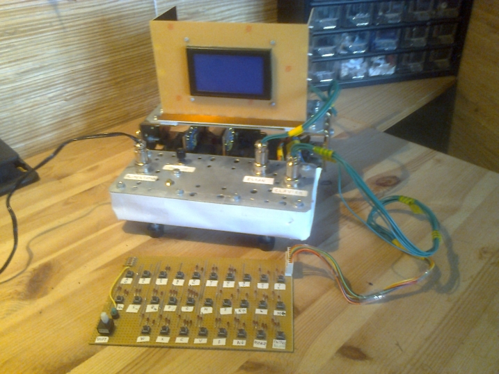
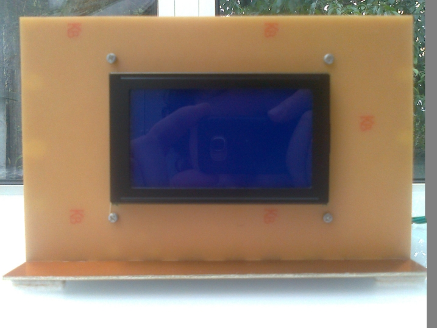
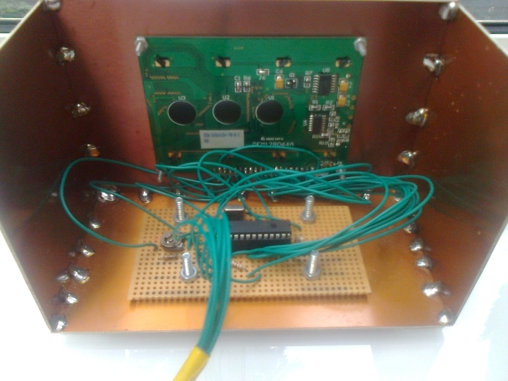
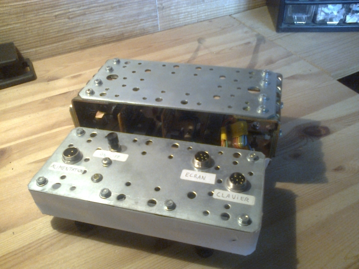
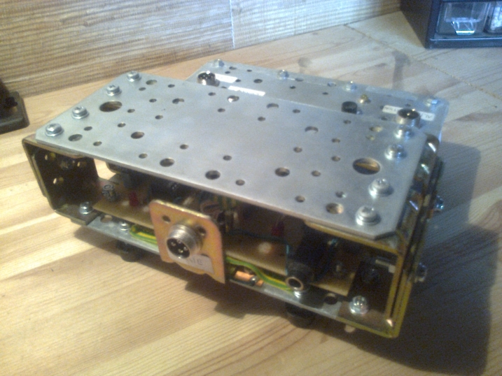

Version finale du A6
Voici la version finale du A6, dotée d'un nouvel écran entièrement graphique d'une résolution de 128 x 64 pixels.
Description de l'écran
Le contrôleur de l'écran permet de gérer automatiquement deux modes d'affichage :
- un mode texte : il suffit d'envoyer des codes de caractères ASCII à l'écran et celui-ci se charge de les afficher correctement en déplaçant le curseur et en "scrollant" lorsque c'est nécessaire.
- un mode graphique limité au strict minimum, l'écran se contente d'allumer ou d'éteindre les pixels dont on lui précise les coordonnées.
L'écran vu de face :
Le circuit du contrôleur :
Amélioration du boîtier du A6
Le boîtier du A6 a toujours été prévu pour que l'écran soit posé dessus, comme le permettaient les vieux ordinateurs au format desktop. Dès lors que l'électronique de la carte mère était terminée, j'ai pu rajouter le capot protégeant le circuit et permettant de poser l'écran.
Voici ce à quoi ressemble le nouveau boîtier :
Le connecteur du port série a dû être déplacé car il se trouvait sur l'emplacement des parties latérales du boîtier, il est désormais accessible à l'arrière.
Et pour terminer, voici le A6 en plein fonctionnement !
 Retour au menu des projets
Retour au menu des projets